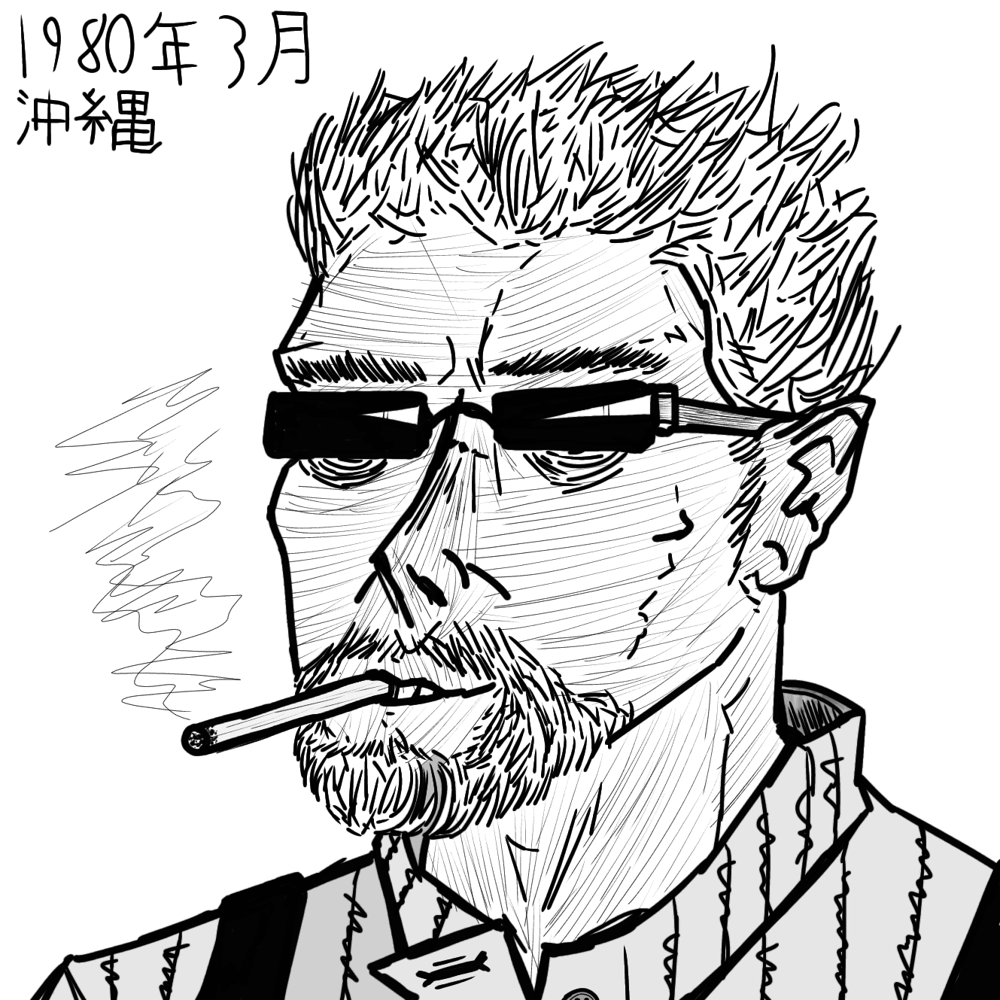

Meet The Phenoms
Tetsuya Nakama
Height: 6'3" / 190.5 cm.
Weight: 181 lb. / 82 kg. / 12.9 st.
Blood Type:
Hair Color: Salt & Pepper
Eye Color: Brown (Obscured by glasses)
Age: 37
Nationality: Japanese Archipelago
Bio: Predominantely Okinawan, Tetsuya was born in Nagoya and raised as Japanese, his father fought in World War 2, being drafted before Tetsuya was
delivered. Dying in Iwo Jima, his remains were never recovered and his wife was left a widow. From a young age, he became enamored by the art of fighting
and trained in Okinawan Karate and Kobudo before joining the JSDF at 18. There he would learn the basics of Jietakakutojutsu, as well as operate as a support
gunner in case of warfare. After leaving the service, he began to rekindle his love for martial arts, training in kyokushin karate under Mas Oyama and entering
regional kickboxing circuits to prove his talent. As he grows older, he fights less, but is still adequately trained.